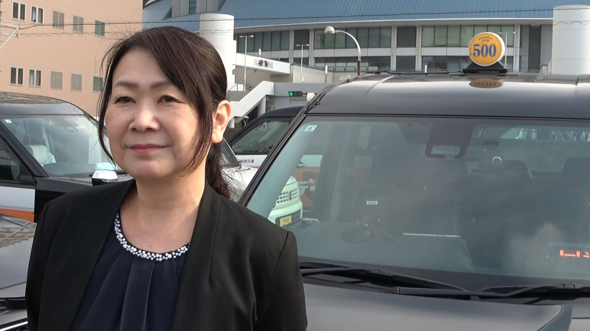

タクシー乗務員って勤務時間が不規則で、プライベートを楽しむ余裕が少ないイメージがあります。ワンコインドームさんではどうですか？
実際はその逆で、うちの会社に入ってからは休みを思い切り楽しめるようになりました。
その理由は、中小会社としては異例の福利厚生制度が整っているからなんです。

「プライベートが充実しないわけがない」について、答えてくれたタクシー乗務員さん
コンちゃん 乗務歴３年目 昼勤
実際はその逆で、うちの会社に入ってからは休みを思い切り楽しめるようになりました。
その理由は、中小会社としては異例の福利厚生制度が整っているからなんです。
まず一番驚かれるのは、「ルネサンス」スポーツクラブに無料加入できることです。
乗務は座りっぱなしの仕事なので、体を動かしてリフレッシュできるのは本当にありがたいですね。
はい。実は、会社が阪神甲子園球場の年間ボックス席を法人契約していて、乗務員は抽選で観戦できるんです。
プロ野球を特等席で楽しめるのは、家族や友人にも喜ばれますよ。
旅行好きにはたまりませんよ。会員制リゾートホテル「エクシブ」「マリントピア」と法人契約しているので、家族旅行や仲間とのリゾート利用が可能です。
自分ではなかなか泊まれないようなホテルに行けるのも、この会社ならではですね。
もちろんです。
制服を仕立ててもらっている「紳士服のアオキ」では社員割引が効きます。
スーツや小物をお得に買えるので、普段の生活でも役立っています。
いいところを突きますね（笑）。
タクシー専門の洗車サービス「ダイシン」出張洗車サービスがあり、会社に来てくれて、木・金は無料で洗車してくれるんです。自分で洗う手間が省けて、いつもピカピカの車でお客さまをお迎えできます。
会社の役員車「エスクワイア」を、空いていれば無料でレンタカーできるんです。
家族旅行や引っ越しのときに使えるので、とても助かりますよ。
はい。これだけの制度があるので、公休日はスポーツを楽しんだり、家族で旅行したり、趣味を満喫したりと、プライベートを充実させられるんです。
タクシー業界では珍しいことですが、ワンコインドームなら「働く」も「休む」も思い切り楽しめますよ。
ワンコインドームなら、働くだけじゃなく人生そのものを豊かにできます。
「しっかり稼ぐ」と「しっかり休む」が両立できる環境で、あなたの生活をもっと楽しくしてみませんか？
これを本気で実現しているタクシー会社が、ワンコインドームです。